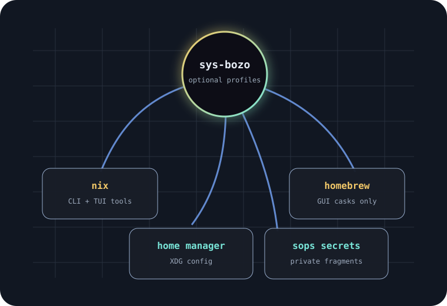

Docs, inventory, host model, and bootstrap checks should work without Nix or Homebrew.
Installable system profile
sys-bozo: many machines, one sane baseline.
sys-bozo documents and installs the shared workstation layer across macOS and Linux hosts. Nix, Homebrew, Home Manager, GUI apps, and host policy are optional modules, not mandatory religion.

Operating rule
Make every layer optional. Make every secret absent.
sys-bozo should run as a docs-only guide, a plain shell installer, a Home Manager profile, a nix-darwin host, a Homebrew GUI layer, or a full managed workstation.
Use Nix for CLI tools and Homebrew for GUI apps only when that module is enabled.
SSH aliases, tailnet details, and internal host facts stay out of public docs and installs.
Immediate blockers
Trust starts with reachability.
The audit is only useful after every Tailscale device can be reached by SSH from every machine that needs to compare state.
| Priority | Work | Why it matters |
|---|---|---|
| Zero | Fix SSH across Tailscale devices | Without this, host comparison is theater. |
| One | Normalize host identity | Canonical host names should be separate from private SSH aliases. |
| Two | Import work-system tools | Shared daily tools should be declared once and applied through whichever module is enabled. |
| Three | Package sys-bozo profiles | Install paths must support docs-only, shell-only, Home Manager, nix-darwin, Homebrew, and Linux variants. |